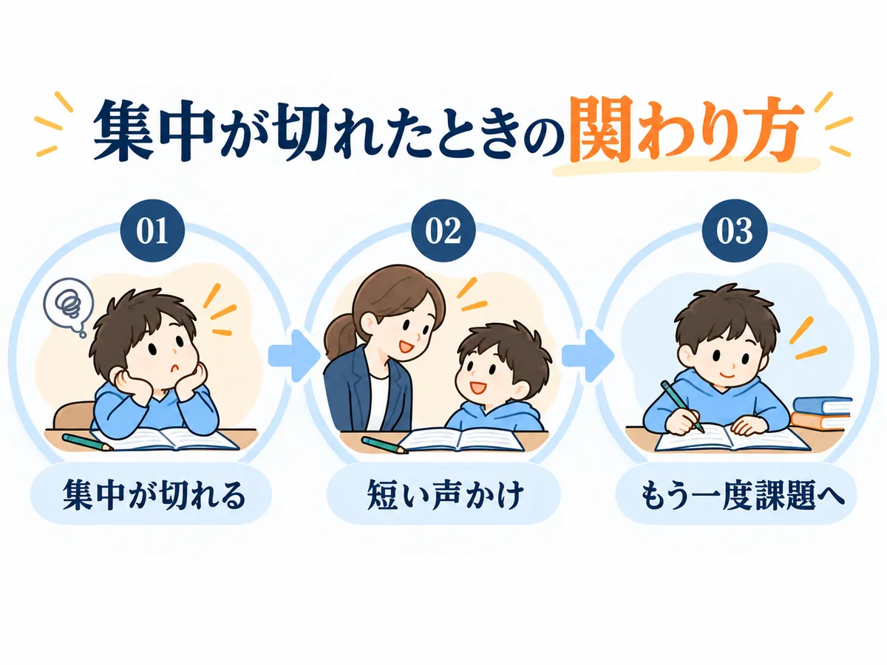
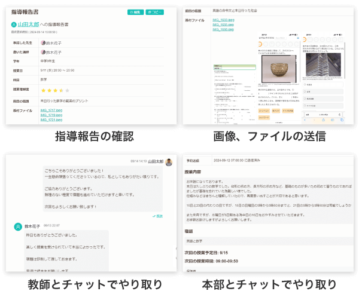

発達特性のある子の勉強法。
何度教えても進まないなら、
同じやり方を続けなくていい。
宿題に取りかかれない。
漢字がなかなか覚えられない。
算数だけ、いつも同じところで止まる。
同じ「勉強が進まない」でも、
合う声かけも、教え方も同じとは限りません。
ソウガク公式の声にあった3つのケース
- 集中が切れそうになった子 → 先生の声かけで、もう一度勉強へ
- 数・計算につまずいた子 → 毎回、伝え方を変えて指導
- 家で教えるとケンカになる家庭 → 「親が全部見なくていい」形へ
この3つを見たあとに、ソウガクが実際に何をしてくれるのかも紹介します。
＼先にサービス内容を見たい方はこちら／
ソウガクは何をしてくれる？ ↓同じところで止まります…。
先生がどう関わったかを見てみましょう。
※よくある迷いを編集部が会話形式にしたものです（人物はイメージ）。
集中が切れても、戻れる声かけがあった

宿題を始めても、すぐ集中が切れる…。
公式サイト掲載の生徒・保護者の声（小学5年生）
授業中に集中が切れそうになる場面でも、先生の声かけで再び勉強に向かう様子があったそうです。
本人も先生との授業を楽しみにしている、と保護者の声が掲載されています。
小学5年生・保護者
「集中力が切れそうになっても、先生の言葉で、また頑張って、勉強できている姿に感動しています。」
※ソウガク公式サイト掲載の声を編集部が要約し、一部を抜粋したものです。個人の感想であり、同様の結果を保証するものではありません。
ずっと集中できなくてもいい。
切れたあとに、戻れるか。
この子の場合は、「集中し続ける」より、集中が切れそうなときの戻し方がポイントでした。
同じ説明で進まないなら、伝え方を変える

何度説明しても、同じところで止まる…。
公式サイト掲載の保護者の声（小学2年生）
数の理解が難しく、計算が苦手なお子さん。始める前は、保護者もとても不安だったそうです。
先生が毎回いろいろなやり方で、分かりやすいように丁寧に教えてくれている、と紹介されています。
小学2年生・保護者
「先生が毎回色々なやり方で、娘が分かりやすいように丁寧な指導をしてくださいますのでとてもありがたいです。」
※ソウガク公式サイト掲載の声を編集部が要約し、一部を抜粋したものです。個人の感想であり、同様の結果を保証するものではありません。
同じ説明を繰り返すのではなく、
その子に伝わるやり方を探す。
「算数が苦手」で終わらせず、計算なのか、文章題なのか、手順なのか。
どこで止まっているかまで見れば、変える場所が分かります。
家で教えるとケンカになるなら、親が先生役を降りてもいい

家で私が教えると、つい言いすぎてしまう…。
公式サイト掲載の保護者の声（小学4年生・ADHDの診断あり・普通級）
学校へ行ける日が減り、勉強の遅れが気になっていました。家で保護者が勉強を見ると、イライラして親子で言い合いになることもあったそうです。
オンラインで週1回学ぶ習慣ができたことで、保護者が「ずっと自分が見なければ」と抱えていた負担が軽くなった、と紹介されています。
小学4年生・保護者
「何より私がずっと見なくては・・というプレッシャーから開放されたことが、とても助かっています。」
※ソウガク公式サイト掲載の声を編集部が要約し、一部を抜粋したものです。個人の感想であり、同様の結果を保証するものではありません。
親が全部教えなくてもいい。
勉強を見る人を、家庭の外にもつくる。
それだけで、親子の役割を少し戻せる家庭もあります。
- 集中が切れたら、声をかけて戻す
- 伝わらなければ、教え方を変える
- 家庭で抱えきれない部分は、先生に任せる
子どもに合わせるのは、教材だけではありません。
声かけも、教え方も、家庭との関わり方も変える。
これを最初から「発達特性がある子」を前提にやっているのが、ソウガクです。
発達障害・グレーゾーン専門のオンライン家庭教師
＼ソウガク／
ソウガクは、何をしてくれるの？
まずは、ここだけ見ればOK
- 今どこで困っているかを見る → お子さん用の個別指導計画を作る
- 発達特性を学んだ先生が担当 → 発達支援専門機関による教師研修
- 授業のあとも相談できる → 毎回の指導報告＋教師/本部チャット
- 入会前に相性を見られる → 無料体験は2回、1回目は保護者面談も可
こんな家庭に合いやすい
- 塾や一般的な家庭教師で、うまくいかなかった
- 何をどう教えればいいか、分からなくなってきた
- 家で教えると、つい親子でぶつかってしまう
- 授業が終わったあとも、相談できる相手がほしい
1.まず、今どこで困っているかを見る
「算数が苦手」で終わらせず、計算なのか、文章題なのか、手順なのか。
今どこで止まっているかを見てから、進め方を考えます。
※公式では、この最初の確認を「アセスメント」と案内しています。ここでは、「どこで困っているかを整理する確認」と考えると分かりやすいです。
2.その子用の進め方を作る
確認した内容をもとに、体験後にお子さん用の個別指導計画を作成します。
「みんな同じカリキュラム」ではなく、今の困りごとをもとに進め方を決めます。
3.先生任せにしない
先生は、一般社団法人 発達凸凹アソシエーションによる教師研修と、座学のマニュアル研修を受けた社会人講師です。
4.家で困ったことも相談できる

毎回の指導報告があり、家で困ったことがあれば教師や本部にチャットで共有できます。
授業をお願いしたあと、また親だけで先生役に戻らなくていい。
無料体験は「授業を試す」だけではありません
無料体験は2回まで。1回目を保護者と先生の面談にすることもできます。
体験後には、お子さん用の個別指導計画。
入会するかどうかは、それを見てから考えられます。
- 無料体験2回
- 1回目は保護者面談も可
- 入会後継続率96.7％（公式LP掲載）
- 専門研修を受けた講師100％（公式LP掲載）
- 授業料1カ月分返金保証※
※返金保証には条件があります。入会金は対象外です。
＼まずは今の困りごとを話してみる／
無料体験で相談してみる「家でも集中できないのに、オンラインで大丈夫？」
無理に「大丈夫です」とは言いません。
子どもによって、先生との相性も、画面越しの授業が合うかどうかも違うからです。
公式サイト掲載の保護者の声（中学2年生・特別支援学級）
勉強への苦手意識があり、初回の体験では落ち着いて画面の前に座ることも難しかったそうです。
先生は急いで授業を進めず、時間をかけて関係をつくりました。その後は授業の時間を楽しみにするようになった、と紹介されています。
中学2年生・保護者
「でも先生が時間をかけて信頼関係を築く努力をしてくださり、今ではこの時間を楽しみにしています。」
※ソウガク公式サイト掲載の声を編集部が要約し、一部を抜粋したものです。個人の感想であり、同様の結果を保証するものではありません。
最初から「オンライン授業をちゃんと受けられる子」でなくてもいい。
合うかどうかは、入会を決める前に体験で見ればいい。
▶ソウガクの無料体験を公式サイトで見る└1回目は保護者だけの面談にもできます
まずは2回の無料体験から

ここで紹介したのは、あくまで他のご家庭の例です。
お子さんにも同じ変化が起きるとは限りません。
だからこそ、まず2回の無料体験で相性を見て、入会後も条件を満たせば最初の1カ月の授業料を返金できる仕組みがあります。
段階1｜入会前は無料体験2回
1回目を保護者と先生の面談にして、そこで話した内容をもとに、2回目でお子さんの授業を受けることもできます。
体験を担当するのは、入会後に実際に担当する予定の先生です。

段階2｜入会後も最初の1カ月まで
「体験では良さそうだった。でも続けてみたら合わなかったら？」
発達特性のあるお子さんは、1〜2回の体験だけでは相性を判断しきれないこともあります。
そこまで心配する家庭のために、ソウガクは授業料1カ月分の全額返金保証を用意しています。

※返金保証には条件があります。対象は1カ月分の受講料で、入会金は対象外です。詳細は下記をご確認ください。
返金保証の条件に注意
初回授業日から30日以内に連絡した、初めて利用する家庭（1世帯1回）が対象です。最低1回の授業受講が必要で、返金されるのは1カ月分の受講料です（入会金は対象外）。
対象は小学生25分/50分、中学生・高校生35分/60分の各月4回までのコース。詳細は申込前に公式サイトで最新条件を確認してください。
「家庭教師を始める」と、今ここで決めなくて大丈夫です。
まずは、今どこで困っているのか。
どんな先生なら話せそうか。
どんな進め方なら続けられそうか。
一度、親子の外にいる人と整理してみる。
そのくらいの気持ちで、体験を使っていいと思います。
料金はいくらかかる？
子どもに合いそうでも、続けられる金額かどうかは大事です。
「あとから教材費が増えないかな」
「結局、月にいくらかかるんだろう」
申し込む前に、ここも見ておきましょう。
表は横にスクロール可能
| 学年 | 短いコース（月4回） | 長いコース（月4回） |
|---|---|---|
| 小学生 | 25分 13,200円 | 50分 22,000円 |
| 中学生 | 35分 18,480円 | 60分 26,400円 |
| 高校生 | 35分 21,560円 | 60分 29,920円 |
※すべて税込。入会金22,000円（税込）は別途。
- 保証金・月会費・更新費・教師交代費は0円
- 受験生割増なし・学年ごとの料金UPなし
- 科目数による料金UPなし
- 高額教材の販売なし
安いかどうかだけではなく、無理なく続けられるか。
料金も含めて「うちには合いそうか」を、体験のあとで考えて大丈夫です。
よくある質問
診断がついていなくても受けられますか？
はい。診断がなくても、グレーゾーンでも受講できます。診断名の申告や手帳・受給者証の提出も不要です。
集中力が続かなくても大丈夫？
集中が続きにくいお子さん向けに、小学生には25分、中高生には35分の短時間コースがあります。会話やゲーム要素も取り入れながら進める工夫があります。
先生が合わなかったら？
教師の交代は何度でも無料です。担当教師の性別希望も伝えられます。
授業中、親はずっとそばにいる必要がありますか？
初回はできる限り同席をお願いしていますが、その後は保護者が家にいなくても受講できます。指導内容は専用アプリで確認できます。
体験後にしつこく勧誘されませんか？
公式FAQでは、体験後の無理な勧誘は一切しないと案内されています。
1カ月全額返金保証は、本当に全額戻りますか？
対象は1カ月分の受講料で、入会金は対象外です。初回授業日から30日以内、最低1回の授業受講、保証期間内の連絡などの条件があります。対象コース・回数にも条件があるため、申込前に公式サイトで最新条件を確認してください。
迷ったら、まず体験で確かめる

お子さんのことだから、簡単には決められないと思います。
「本当に合うのかな」
「また続かなかったらどうしよう」
「先生との相性は大丈夫かな」
その不安を、ページだけで全部消すことはできません。
だから、まず実際の先生と話して、お子さんの様子を見てもらう。
「ちょっと違うな」と思えば、入会しなくていい。
「この先生なら話せそう」「このやり方なら続けられるかも」と思えたら、そのときに考えればいいと思います。
勉強のことを、これからも親子だけで何とかし続けなくてもいい。
お子さんに合う学び方を探す最初の一歩として、無料体験を使ってみてください。
- 無料体験2回（1回目は保護者面談も可）
- 同じ先生が入会後も担当
- 体験後に個別指導計画
- 授業料1カ月分返金保証※
※掲載情報は2026年10月5日時点の各社公式情報をもとに作成しています。最新の料金・サービス内容・適用条件は各公式サイトでご確認ください。
このページの運営者
- サイト名
- わが子の学び方ガイド
- 運営者
- わが子の学び方ガイド編集部（運営：ハコぶファミリー）
- お問い合わせ
- ハコぶファミリー お問い合わせ
当ページは、紹介しているサービスの運営会社が作成したものではありません。サービスの申込・利用に関するお問い合わせは、各サービスの公式サイトへお願いします。